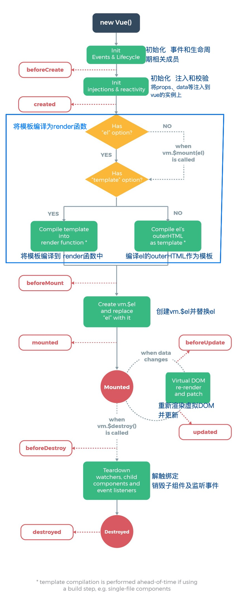

VUE 代码基础结构
VUE代码有两种渲染方式：
使用模板渲染，vue内部会data中的数据填充到指定的模板中，并把模板渲染到浏览器
1
2
3
4
5
6
7
8
9
10
11
12
13
14
15
16
17<div id="app">
<p>名称：{{companent.name}}</p>
<p>地址：{{companent.address}}</p>
</div>
<script src="./vue.js"></script>
<script>
new Vue({
el:"#app",
data:{
companent:{
name:"公司名称",
addrress:"中国上海"
}
}
})
</script>使用render函数，创建虚拟DOM。
render方法接收一个参数，这个参数是h函数，h函数用于创建虚拟DOM。
render方法把h函数创建的虚拟DOM返回。
$mount方法把虚拟DOM转换为真实DOM渲染到浏览器。
1
2
3
4
5
6
7
8
9
10
11
12
13
14
15
16
17
18
19
20
21<div id="app">
</div>
<script src="./vue.js"></script>
<script>
new Vue({
el: "#app",
data: {
companent: {
name: "公司名称",
addrress: "中国上海"
}
},
render(h){
return h('div', [
h('p', `名称：${this.companent.name}`),
h('p', `地址：${this.companent.addrress}`),
])
}
}).$mount('#app')
</script>
生命周期

常用语法
- 差值表达式—-
{{}} - 指令 —
v-bind,v-on,v-for,v-if...,也可以自定义指令 - 计算属性和侦听器 —-
computed,watch,计算属性计算的结果会被缓存，对于一步操作或开销比较大的操作可以使用侦听器。 - Class和Style绑定，分别可以绑定数组或者对象。实际开发中建议使用Class绑定，使样式可以重用
- 条件渲染/列表渲染
- 表单输入绑定
常用概念
组件
组件是可复用的VUE实例，封装了HTML、CSS、JS。可是实现页面上的一个功能区域，可以被无限次复用
插槽
插槽是在组件中使用solt占位，在使用组件时，与占位位置对于的内容会填充到组件中，使组件更加灵活
插件
vue-router，vuex都是VUE的插件。
混入
mixin如果多个组件都有相同的选项，就可以使用混入的方式，将选项合并，使代码重用。
vue的构建版本
- 运行时版：不支持template模板，需要打包的时候提前编译。
- 完整版：包含运行时版和编译器，体积比运行时版大10k左右，程序运行的时候把模板转换成render函数。
vue-cli采用运行时版本，因为其效率更高。
修改vue版本为完整版
在vue.config.js中配置vue版本
1 | module.exports = { |
在运行时版本中使用render函数渲染
原代码
1 | Vue.component('router-link',{ |
render函数渲染
1 | Vue.component('router-link',{ |